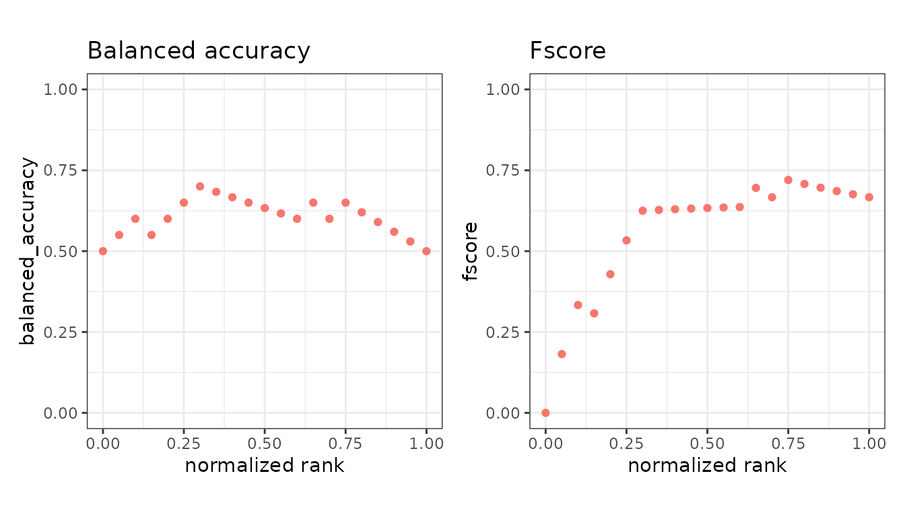
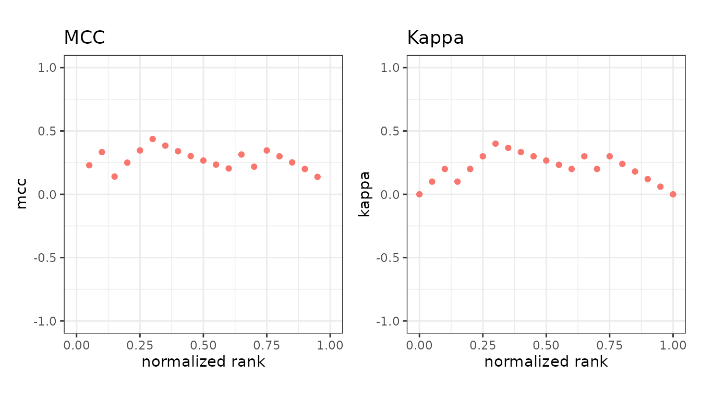

These combine several cells of the confusion matrix into one number that does not collapse when the classes are imbalanced. The first six are in the default set; the last two are asked for by name.
library(precrec)
library(ggplot2)
points <- evalmod(
scores = P10N10$scores, labels = P10N10$labels,
mode = "basic"
)Balanced accuracy and F-score
| Metric | Formula | Range |
|---|---|---|
balanced_accuracy |
(sensitivity + specificity) / 2 | 0 to 1 |
fscore |
harmonic mean of precision and recall | 0 to 1 |
Balanced accuracy is accuracy with both classes weighted equally, so
the majority class cannot carry it on its own. fscore is
the F-beta score and defaults to F1; evalmod(beta = 2)
counts recall twice as heavily as precision, beta = 0.5
half as heavily.

Correlation-like metrics
| Metric | Formula | Range |
|---|---|---|
mcc |
correlation of prediction and truth | -1 to 1 |
kappa |
agreement above chance | -1 to 1 |
Matthews correlation coefficient uses all four cells, so it is high only when the classifier does well on both classes. Cohen’s kappa compares observed agreement against what two raters with these margins would reach by chance. Both can go negative, meaning worse than chance, which is why their plots are drawn on a -1 to 1 axis.

Informedness and markedness
| Metric | Formula | Range |
|---|---|---|
informedness |
sensitivity + specificity - 1 | -1 to 1 |
markedness |
precision + NPV - 1 | -1 to 1 |
Informedness, also called Youden’s J, is how much better than guessing the classifier is over the actual classes; markedness is the same idea over the predicted classes. Their geometric mean is the MCC.
Skill scores
| Metric | Formula | Range |
|---|---|---|
roc_dist |
distance to the perfect point in ROC space | 0 to sqrt(2) |
sedi |
symmetric extremal dependence index | -1 to 1 |
Not in the default set, so name them in metrics =.
skill <- evalmod(
scores = P10N10$scores, labels = P10N10$labels,
mode = "basic", metrics = c("roc_dist", "sedi")
)
autoplot(skill, c("roc_dist", "sedi"))
roc_dist is the straight-line distance from
(1 - specificity, sensitivity) to the top-left corner where
both are 1 - the only metric here that is better when
smaller, and the only one whose maximum is
sqrt(2). Minimizing it is a standard way to choose an
operating point off a ROC curve.
sedi comes from forecast verification, where the event
is often rare, and is built not to drift towards a fixed value as the
positive class gets rarer - the failure mode that makes several other
skill scores useless for rare events. It is 0 for chance and 1 for
perfect.
Both are undefined at the ends of the ranking, where every prediction
is one class, but stay finite: sedi’s four logarithms are
clamped away from 0 and 1.
Which to report
For a single number on imbalanced data, mcc is the
safest here - no blind spot in any cell. fscore ignores the
true negatives entirely, usually deliberate but worth knowing. For
choosing an operating point rather than scoring one,
roc_dist is the more direct answer. None of them replaces a
curve: each describes one cutoff, and the cutoff is a choice you have to
justify. See AUC and other curve
summaries.
mcc is NA where a row or column of the
table is empty, and kappa where chance agreement is exactly
1 - the top and bottom of the ranking.